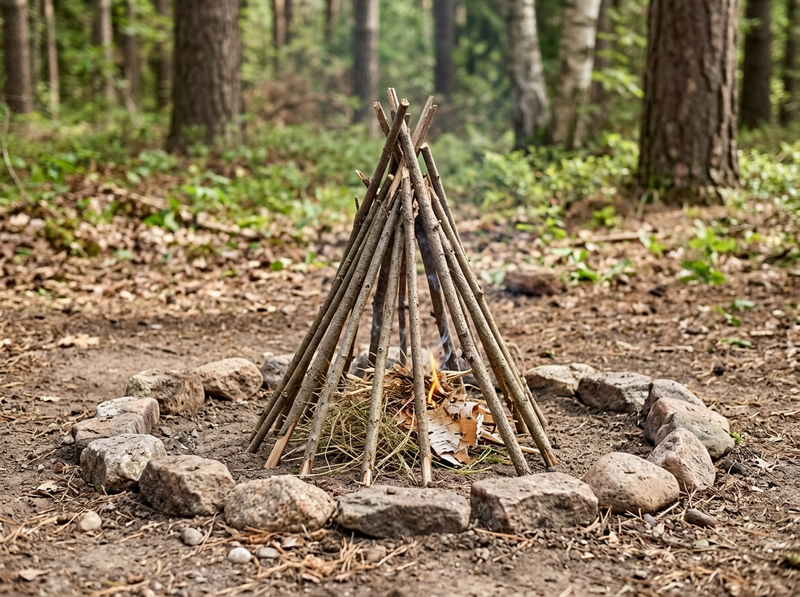

Teepee Fire

The teepee fire is a common way to arrange wood when starting a campfire.
What It Is
A teepee fire uses small pieces of wood arranged in a cone shape around tinder. The structure leaves open spaces that allow air to reach the fire.
When to Use It
This structure can be useful when starting a campfire because small pieces of wood can catch fire before larger pieces are added.
How It Works
Tinder is placed in the center. Small dry sticks are placed around the tinder in a cone shape. Larger pieces of wood can be added after the fire becomes stronger.
Materials Needed
- Dry tinder
- Small dry sticks
- Larger firewood
- Safe ignition source
Source
Fire safety information: National Park Service - Campfires